\( %Gen math \newcommand{\problem}[1]{\subsection*{#1}} \newcommand{\pt}[1]{\paragraph{(#1)}} \newcommand{\spc}{\text{ }} \newcommand{\R}{\mathbb{R}} \newcommand{\N}{\mathbb{N}} \newcommand{\Q}{\mathbb{Q}} \newcommand{\C}{\mathbb{C}} \newcommand{\A}{\mathbb{A}} \newcommand{\F}{\mathbb{F}} \newcommand{\Z}{\mathbb{Z}} \newcommand{\I}{\mathbb{I}} \newcommand{\HA}{\mathbb{H}} \newcommand{\SA}{\mathbb{S}} \newcommand{\beq}{\begin{equation}} \newcommand{\eeq}{\end{equation}} \newcommand{\bmt}{\begin{bmatrix}} \newcommand{\bmtl}[1]{\begin{array}{#1}} \newcommand{\emt}{\end{bmatrix}} \newcommand{\rank}{\operatorname{rank}} \newcommand{\re}{\operatorname{Re}} \newcommand{\im}{\operatorname{Im}} \newcommand{\img}{\operatorname{im}} \newcommand{\trace}{\operatorname{tr}} \newcommand{\ad}{\operatorname{ad}} \newcommand{\Ad}{\operatorname{Ad}} \newcommand{\Aut}{\operatorname{Aut}} \newcommand{\adj}{\operatorname{adj}} \newcommand{\spanl}{\operatorname{span}} \newcommand{\Hom}{\operatorname{Hom}} \newcommand{\id}{\operatorname{id}} \newcommand{\Id}{\operatorname{Id}} \newcommand{\twomat}[4]{\bmt #1 & #2 \\ #3 & #4 \emt} \newcommand{\rref}{\operatorname{rref}} \newcommand{\Det}{\operatorname{Det}} \newcommand{\supp}{\operatorname{supp}} \newcommand{\GL}{\operatorname{GL}} \newcommand{\SU}{\operatorname{SU}} \newcommand{\SO}{\operatorname{SO}} \newcommand{\SL}{\operatorname{SL}} \newcommand{\U}{\operatorname{U}} \newcommand{\pr}{\operatorname{pr}} \newcommand{\sff}{\operatorname{II}} \newcommand{\Res}{\operatorname{Res}} \newcommand{\Var}{\operatorname{Var}} \newcommand{\CNOT}{\operatorname{CNOT}} \newcommand{\btab}{ \begin{table}[h] \centering \begin{tabular}{ccc} } \newcommand{\etab}{ \end{tabular} \end{table} } \newcommand{\mathdiagram}[3]{ \begin{figure}[h!] \centering \includegraphics[scale=#2]{mathdiagram/#1} \caption{#3} \end{figure} } \newcommand{\wrapdiagram}[3]{ \begin{wrapfigure}{r}{0.5\textwidth} \centering \includegraphics[scale=#2]{mathdiagram/#1} \caption{#3} \end{wrapfigure} } \newcommand{\stack}[2]{\stackrel{\text{#1}}{#2}} %Phys \newcommand{\op}[1]{\operatorname{#1}} \newcommand{\vecd}[2]{#1 \vh{i} + #2 \vh{j}} \newcommand{\vecdm}[2]{#1 \vh{i} - #2 \vh{j}} \newcommand{\vect}[3]{#1 \vh{i} + #2 \vh{j} + #3 \vh{k}} \newcommand{\va}[1]{{\boldsymbol{#1}}} \newcommand{\vh}[1]{\hat{\mathbf{#1}}} \newcommand{\mb}[1]{\mathbf{#1}} \newcommand{\px}[1]{\frac{\partial #1}{\partial x}} \newcommand{\py}[1]{\frac{\partial #1}{\partial y}} \newcommand{\pz}[1]{\frac{\partial #1}{\partial z}} \newcommand{\partialt}[1]{\frac{\partial #1}{\partial t}} \newcommand{\D}[1]{\operatorname{d #1}} \newcommand{\sgn}{\operatorname{sgn}} \newcommand{\T}[1]{\text{#1}} \newcommand{\VE}{\vec{\mathbf{E}}} \newcommand{\VB}{\vec{\mathbf{B}}} \newcommand{\VA}{\vec{\mathbf{A}}} \newcommand{\pd}[2]{\left(\frac{\partial #1}{\partial #2}\right)} \newcommand{\diagram}[2]{ \begin{figure}[H] \centering \includegraphics[scale=#2]{#1} \end{figure} } \newcommand{\diagramb}[3]{ \begin{figure}[H] \centering \includegraphics[scale=#2]{#1} \caption{#3} \end{figure} } \newcommand{\physdiagram}[2]{ \begin{figure}[h!] \centering \includegraphics[scale=#2]{physdiagram/#1} \caption{Diagram} \end{figure} } \newcommand{\physdiagramb}[3]{ \begin{figure}[h!] \centering \includegraphics[scale=#2]{physdiagram/#1} \caption{#3} \end{figure} } \newcommand{\physdiagrambb}[6]{ \begin{figure}[h!] \centering \begin{minipage}[b]{0.45\textwidth} \includegraphics[scale=#2]{physdiagram/#1} \caption{#5} \end{minipage} \hfill \begin{minipage}[b]{0.45\textwidth} \includegraphics[scale=#4]{physdiagram/#3} \caption{#6} \end{minipage} \end{figure} } \newcommand{\doublefigure}[5]{ \begin{figure}[h!] \centering \begin{minipage}{.5\textwidth} \centering \includegraphics[#2]{wavediagram/#1} \end{minipage}% \begin{minipage}{.5\textwidth} \centering \includegraphics[#4]{wavediagram/#3} \end{minipage} \caption{#5} \end{figure} } \newcommand{\doublefiguretwo}[5]{ \begin{figure}[p] \centering \begin{subfigure}[b]{0.4\textwidth} \centering \includegraphics[scale=#2]{wavediagram/#1} \end{subfigure} \hfill \begin{subfigure}[b]{0.4\textwidth}im \centering \includegraphics[scale=#4]{wavediagram/#3} \begin{minipage}{.1cm} \vfill \end{minipage} \end{subfigure} \caption{#5} \end{figure} } \newcommand{\wavediagram}[3]{ \begin{figure}[h!] \centering \includegraphics[scale=#2]{wavediagram/#1} \caption{#3} \end{figure} } \newcommand{\xhat}{\hat{x}} \newcommand{\yhat}{\hat{y}} \newcommand{\zhat}{\hat{z}} \newcommand{\rhat}{\hat{r}} \newcommand{\thetahat}{\hat{\theta}} \newcommand{\phihat}{\hat{\varphi}} \newcommand{\phat}{\hat{p}} \newcommand{\Hhat}{\hat{H}} \newcommand{\That}{\hat{T}} \newcommand{\Ohat}{\hat{O}} \newcommand{\Nhat}{\hat{N}} \newcommand{\Rhat}{\hat{R}} \newcommand{\Lhat}{\hat{L}} \newcommand{\nhat}{\hat{n}} \newcommand{\xhattilde}{\hat{\tilde{x}}} \newcommand{\phattilde}{\hat{\tilde{p}}} \newcommand{\psitilde}{\tilde{\psi}} \newcommand{\Psitilde}{\tilde{\Psi}} \newcommand{\Thattilde}{\hat{\tilde{T}}} \newcommand{\fancyL}{\mathcal{L}} \newcommand{\fancyO}{\mathcal{O}} \newcommand{\fancyP}{\mathcal{P}} \newcommand{\fancyH}{\mathcal{H}} \newcommand{\fancyF}{\mathcal{F}} \newcommand{\fancyX}{\mathcal{X}} \newcommand{\fancyG}{\mathcal{G}} \newcommand{\fancyM}{\mathcal{M}} \newcommand{\fancyA}{\mathcal{A}} \newcommand{\fancyR}{\mathcal{R}} \newcommand{\ahat}{\hat{a}} \newcommand{\bhat}{\hat{b}} \newcommand{\ehat}{\hat{e}} \newcommand{\khat}{\hat{k}} \newcommand{\spinup}{\left| \uparrow \right\rangle} \newcommand{\spindown}{\left| \downarrow \right\rangle} \newcommand{\spinupl}{\left\langle \uparrow \right|} \newcommand{\spindownl}{\left\langle \downarrow \right|} \newcommand{\spinupup}{\left| \uparrow \uparrow \right\rangle} \newcommand{\spinupdown}{\left| \uparrow \downarrow \right\rangle} \newcommand{\spindownup}{\left| \downarrow \uparrow \right\rangle} \newcommand{\spindowndown}{\left| \downarrow \downarrow \right\rangle} \newcommand{\spinupupl}{\left\langle \uparrow \uparrow \right|} \newcommand{\spinupdownl}{\left\langle \uparrow \downarrow \right|} \newcommand{\spindownupl}{\left\langle \downarrow \uparrow \right|} \newcommand{\spindowndownl}{\left\langle \downarrow \downarrow \right|} \newcommand{\pdiff}[2]{\frac{\partial #1}{\partial #2}} \newcommand{\phibar}{\bar{\phi}} %Multivar \newcommand{\one}{\mathbbm{1}} \newcommand{\vectwo}[2]{ \big(\begin{smallmatrix} #1\\ #2 \end{smallmatrix}\big) } \newcommand{\vecthree}[3]{ \left(\begin{smallmatrix} #1\\ #2\\ #3 \end{smallmatrix}\right) } \newcommand{\vecfour}[4]{ \left(\begin{smallmatrix} #1\\ #2\\ #3\\ #4 \end{smallmatrix}\right) } \newcommand{\vecsix}[6]{ \left(\begin{smallmatrix} #1\\ #2\\ #3\\ #4\\ #5\\ #6 \end{smallmatrix}\right) } \newcommand{\vol}{\operatorname{vol}} \newcommand{\var}{\operatorname{var}} \newcommand{\tr}{\operatorname{tr}} \newcommand{\proj}{\operatorname{proj}} \newcommand{\eql}{\stackrel{L}{=}} \newcommand{\defeq}{\stackrel{def}{=}} \newcommand{\curl}{\nabla \times} \newcommand{\divg}{\nabla \cdot} \newcommand{\dvg}{\nabla \cdot} \newcommand{\grad}{\nabla} \newcommand{\diag}{\operatorname{diag}} \newcommand{\Diag}{\operatorname{Diag}} \newcommand{\One}{\mathbbm{1}} \)
What’s the best way to display a rainbow on a computer? I first started thinking about this question after I noticed that many popular depictions of the visible spectrum of light that I found on the internet didn’t seem quite right. If I go on google and search up images of the visible spectrum, this is the first result that appears: 1
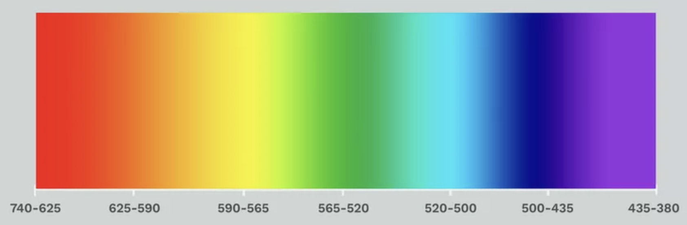
If you’ve ever looked at white light through a prism or diffraction grating or have seen a rainbow, you may notice that this image is far removed from what your eye actually sees. This image contains several regions with very distinct colors: red, yellow, green, cyan, blue, and magenta. These regions seem to be separated by very sharp color gradients. This is fictional. A real spectrum has colors that vary so smoothly that it is almost impossible to tell one color apart from another. There are many more issues with this image, such as colors taking up the wrong amount of space relative to each other and the brightness of different wavelengths not corresponding to reality. I am not trying to criticize the author of this image, but this is clearly an inaccurate depiction of the visible spectrum which is similar to many other examples on the internet. The seriousness of this issue is conveyed by the fact that there is even a Wikipedia talk page discussing this subject that contains many variants of the spectrum: 2
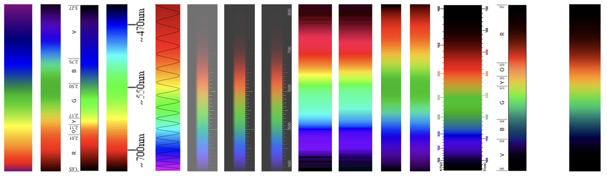
Many of these images exhibit the same issues of color banding, inaccurate hues, and incorrect brightness. Some are better than others and a couple of them are actually quite accurate. The images that best match what I see through my diffraction grating are the three that are rendered over a gray background and contain rulers (6th-8th images from the left). I also really like the one from the Wikipedia page for color: 3
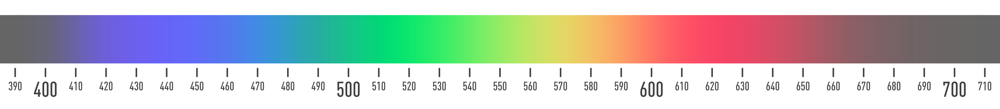
Unfortunately, a lot of these images do not come with information about how they were made. This is what led me to take matters into my own hands and then I set off on the quest to find the best way to display a spectrum on my computer.
It seems like such a simple task. Convert each wavelength to RGB coordinates and put these values into an image file. Color perception, however, is anything but simple. It is so complicated because of the many steps it takes to go from light entering our eyes to electrical signals in the brain and finally the sensation of color. The reality is we have to factor in physics, biology, and even psychology to get the most accurate model of color perception. In the rest of the essay I will ignore psychology and focus mostly on physics, which will produce a result that I consider “good enough”.
We’ll start by taking a look at the fundamental laws that govern our perception of color. Warning: The math will get heavy so it is okay to skim this section. Let’s first state what we mean by the word color. Color is what we perceive when we look at a uniform region that emits light with a particular spectral distribution. The reason is that every object that you can see emits a bunch of photons with different wavelengths. The probability of an emitted photon having a specific wavelength is captured by the spectral power distribution
where \(S(\lambda )\, d\lambda \) gives the amount of electromagnetic energy emitted per unit time between the wavelengths \(\lambda \) and \(\lambda +d\lambda \). Dividing by \(hf\), the energy of a photon, gives the number of photons in this wavelength range. The spectral power distribution uniquely determines the color of an object, as long as we ignore the effects of color contrast. Mathematically, we write the color associated with a spectral distribution as \(C[S]\) where \(C\) is the function that takes a distribution and outputs the corresponding color. Importantly, different distributions \(S_1\), \(S_2\) can yield the same color (\(C[S_1] = C[S_2]\)) when \(S_1\) and \(S_2\) are different from each other. This phenomenon is called metamerism. It manifests when objects that are the same color under a light source become different when the light source changes. Now, all the possible colors that \(C\) represents forms a mathematical set called color space. The most important question we can ask is, how do we describe this set? We can answer this question by looking at a set of fundamental physiological laws deduced by Hermann Grassmann that describe how color perception works. Let us summarize these laws:
First, the perceived color continuously depends on the spectral distribution meaning small changes in \(S\) cause small changes in \(C[S]\).
Next, if we have two sets of identical looking colors \(C[P_1] = C[P_2], C[Q_1] = C[Q_2]\) where \(P_1\) and \(P_2\) appear identical and likewise with \(Q\), then their combinations must also appear identical, ie. \(C[P_1 + Q_1] = C[P_2 + Q_2]\). We will see that this means the set of perceptually distinct spectral distributions forms a vector space (consisting of objects that can be added together). To begin, we choose a particular spectrum \(P\) and define the set
\(W\) consists of all spectra that when added to \(P\), does not change its perceived color (note that elements of \(W\) contain regions of negative intensity, which is mathematically possible but physically impossible). Furthermore, \(W\) does not depend on the choice of reference spectra \(P\). Suppose we defined \(W' = \{w:C[w+Q] = C[Q]\}\) to use the alternate reference spectrum \(Q\). If \(w \in W\) then by the definition of \(W\),
where \(0\) is the zero distribution corresponding to complete blackness. By Grassmann’s laws,
If \(w \in W\) then \(w \in W'\). The logic works in reverse, meaning \(W\) and \(W'\) are the same set. We can also see that if \(w, v \in W\) then \(\alpha w + \beta v \in W\) for any \(\alpha \) and \(\beta \), so \(W\) forms a vector space, and it is in fact a subspace of the set of all spectral distributions. Another way of looking at it is \(W\) is the set of all distributions that appear black. Now that we have \(W\) we can take a complement \(W^c\) in the space of all distributions which we call \(V\). \(V\) is not necessarily unique. Linear algebra tells us we can uniquely write any distribution \(S\) as \(w+v\) where \(w\) comes from \(W\) and \(v\) from \(V\). We know by Grassmann’s laws that \(C[w+v] = C[0+v] = C[v]\) therefore the perceived color of this distribution only depends on \(v\). We therefore say that the space \(V\) parametrizes the set of all colors. In addition, \(C[S] = C[\pi (S)]\) where \(\pi (S)\) projects the function \(S\) onto the subspace \(V\). We sometimes consider \(V\) to be the color space even though it is more accurate to say \(V\) is a coordinate system that describes the true color space consisting of all values of \(C\).
Grassmann’s next law states that color space is three dimensional, and what we mean is that \(V\) is three dimensional. The way we know this can be summarized by an experiment. Suppose we take three sources of light that have different colors and whose intensities can be adjusted. We call the spectral distributions of these lights \(P_r(\lambda ), P_g(\lambda ),\) and \(P_b(\lambda )\). Then suppose that we can make any desired color \(c\) by mixing some amount of these three lights: \(C[c] = C[R P_r + G P_g + B P_b]\) meaning \(C[\pi (c)] = C[R\pi (P_r) + G\pi (P_g) + B\pi (P_b)]\). This would mean that the entire color space \(V\) is spanned by the three distributions \(\pi (P_r), \pi (P_g),\) and \(\pi (P_b)\) and hence \(V\) is three-dimensional. What we see in real life is that if we choose \(P_r, P_g,\) and \(P_b\) to be red, green, and blue sources of light, we can mix them to form most colors. The exception is a few colors require negative amounts of at least one of these colors, but this does not change the conclusion that color space is, indeed, three dimensional.
With this knowledge, let us see how any wavelength of light is equivalent to a sum of three primaries. Let’s consider a monochromatic light source at wavelength \(\mu \) with a certain amount of power. This light has the spectral power distribution
where \(\delta \) is a delta function and represents a highly concentrated distribution that is localized around a single wavelength. We define \(\bar r, \bar g,\) and \(\bar b\) to the amounts of each primary needed to match the color of this monochromatic light. In other words, the functions must satisfy the equation
We now consider the spectral power of an arbitrary light source denoted \(S(\lambda )\) - now without the \(\mu \) and we ask how much of each primary is needed to produce this chosen color. We do this by expanding the formula for \(C[S]\).
The jump from \(\eqref {e2.1}\) to \(\eqref {e2.2}\) comes from combining Grassmann’s laws with the relation \(\eqref {e2.0}\). If we say that \(R, G,\) and \(B\) are the amounts of primaries needed to match \(S\), then that means
In order for the two equations to be equal, it must be the case that
The functions \(\bar r, \bar g,\) and \(\bar b\) are called the color matching functions (CMFs) corresponding to reference colors \(P_r,\) \(P_g,\) and \(P_b\). The color matching functions tell us how much of each primary is needed to match light at a specific wavelength. By integrating the product of the CMFs and the spectral power distribution, we find the amount of each primary needed to match any color we desire. By choosing a particular set of primaries, we get a corresponding color space defined by the \(R, G, B\) values of each color source.
The color system used ubiquitously in the world today is called the CIE 1931 color space developed by the International Commission on Illumination in said year and is derived from the basic laws of perception we previously described. CIE 1931 defines three reference light sources (the “RGB primaries”) to be pure \(700\) \(\mathrm {nm}\) red light, \(546.1\) \(\mathrm {nm}\) green light, and \(435.8\) \(\mathrm {nm}\) blue light each with different intensities that make the CMFs have equal areas under their curves. These give rise to the color matching functions \(\bar r(\lambda )\), \(\bar g(\lambda )\), and \(\bar b(\lambda )\) defined to be the amount of each light source required to reproduce the given monochromatic light source with wavelength \(\lambda \). The functions are shown below.
There are in fact many variations of these color matching functions. The most accurate ones for our purposes are not the original 1931 CMFs, but rather the CIE 2012 “physiologically relevant CMFs” that are derived from experiments involving the cone cells in the human eye. The choice of CMFs makes a big difference to the look of the final image. Given these CMFs, the resulting \(R, G, B\) coordinates defined in equation \(\eqref {e2.3}\) are called the CIE RGB color space coordinates. This is different from the RGB color space used in displays. We’ll discuss how to get there in a moment. After the CIE RGB coordinate system was defined, its creators wanted a new coordinate system that was easier to work with and so they created a new set of coordinates called \(X, Y, Z\) that were equal to a linear transformation of the previous \(R,G,B\) coordinates. Specifically,
These new coordinates correspond to a different set of color matching functions \(\bar x, \bar y, \bar z\) that are related to \(\bar r, \bar g,\) and \(\bar b\) by the same matrix. They also correspond to a different hypothetical set of light sources that are linear combinations of the RGB primaries. Most important advantage of this new coordinate system to us is that \(Y\) corresponds to the luminance of the light source. Luminance is roughly speaking our subjective perception of the intensity of a light source. There is some ambiguity in how exactly it is defined, but for our purposes it corresponds to the CIE \(Y\) coordinate which was chosen specifically to match the luminous efficiency function \(V(\lambda )\).
There is a variant of the XYZ coordinate system in which the \(X\) and \(Z\) coordinates are replaced by \(x\) and \(y\), where
and \(Y\) stays the same. The purpose of these xyY coordinates is to separate out the contributions of hue, saturation, and brightness to a perceived color. The \(x\) and \(y\) coordinates together specify the hue and saturation of a color, called the chroma, independently from the luminance \(Y\). By varying \(x\) and \(y\) we get a range of colors with different chromaticities while keeping brightness the same. For a fixed value of \(Y\) we can look at the space of \(x\) and \(y\), which gives us a chromaticity diagram, shown below.
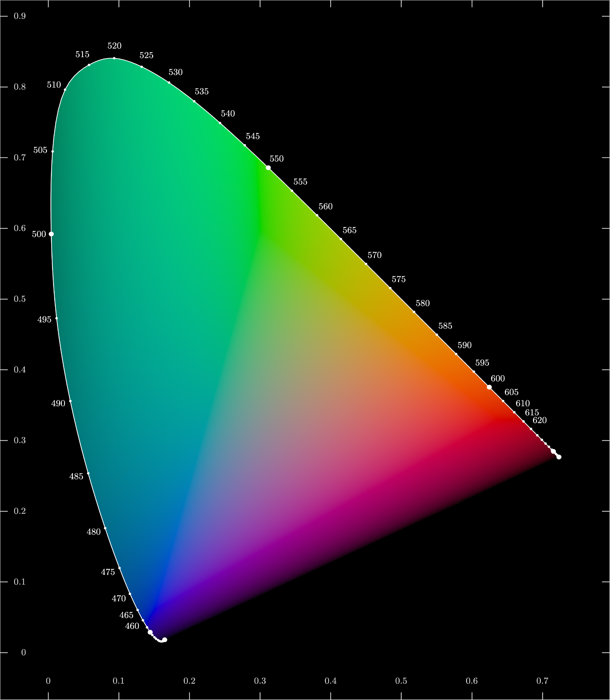
The \(X,Y,Z\) coordinate system is the standard way of encoding colors across a wide variety of industries. It is linear, meaning the act of combining two sources of light corresponds to adding their XYZ coordinates. To get to the RGB spaces used in computer imaging, we’ll look at an example. The canonical color space used across the digital world is called sRGB. The definition of sRGB involves assigning chromaticities to each primary color as well as the color white. We can put this in a table:
| Red | Green | Blue | White | |
| x | \(0.64\) | \(0.3\) | \(0.15\) | \(0.3127\) |
| y | \(0.33\) | \(0.6\) | \(0.06\) | \(0.3290\) |
We can write the \(xy\) values of each color abstractly:
| Red | Green | Blue | White | |
| x | \(x_r\) | \(x_g\) | \(x_b\) | \(x_w\) |
| y | \(y_r\) | \(y_g\) | \(y_b\) | \(y_w\) |
This almost gives us what we need to assign XYZ coordinates to each primary. The only missing piece of information is the luminance \(Y\). We can deduce the luminance of each color by requiring that \((R, G, B) = (1, 1, 1)\) corresponds to white. The convention is to give white itself a luminance of \(1\). Transforming to XYZ coordinates gives
| Red | Green | Blue | White | |
| X coordinate | \(Y_r \frac {x_r}{y_r}\) | \(Y_g \frac {x_g}{y_g}\) | \(Y_b \frac {x_b}{y_b}\) | \(\frac {x_w}{y_w}\) |
| Y coordinate | \(Y_r\) | \(Y_g\) | \(Y_b\) | \(1\) |
| Z coordinate | \(Y_r \frac {1-x_r-y_r}{y_r}\) | \(Y_g \frac {1-x_g-y_g}{y_g}\) | \(Y_b \frac {1-x_b-y_b}{y_b}\) | \(\frac {1-x_w-y_w}{y_w}\) |
We now say that the sum of red, green, and blue is white. This translates to the matrix equation
We can now invert this matrix to solve for \(Y_r, Y_g,\) and \(Y_b\). We find \((Y_r, Y_g, Y_b) = (0.2126, 0.7152, 0.0722)\). This then allows us to determine the XYZ values and we see that
This means the sRGB coordinates and the XYZ coordinates are related by
In fact, there is another phenomenon called chromatic adaptation that we must factor in, which is when the cone cells in the human eye modulate their sensitivity according to the color of ambient light. This is accounted for in my code, but I won’t discuss it further here. Now these \((R,G,B)\) coordinates are still not the same as the ones stored in image files. The final piece of the puzzle is gamma correction. Applying gamma correction to these RGB coordinates produces a new set of values which we call \((R', G', B')\) that are related to the original by a transfer function 6:
The \((R', G', B')\) coordinates are what get stored in an image file. The reason this is done is to account for how our eyes perceive brightness nonlinearly. We can distinguish changes in dark shades much more easily than light shades because a linear increase in \(R\) has much more of a relative effect when \(R\) is small. Switching to \((R', G', B')\) therefore provides more resolution in dark regions of the image where the eye is more sensitive to variations in brightness. The function that maps between \((R', G', B')\) and \((R, G, B)\) is in general called the transfer function and it depends on which color space we are using.
One very important detail is that the values of \(R, G, B\) and \(R', G', B'\) are always restricted to be between \(0\) and \(1\). Colors that have negative values of RGB or values greater than \(1\) are said to lie outside the RGB gamut, the gamut referring to all the colors with allowed RGB values. The gamut can be plotted on the chromaticity diagram, appearing as a triangular region, shown below. The central question explored here is how to represent colors outside this gamut by colors within it and this is what we will discuss later.
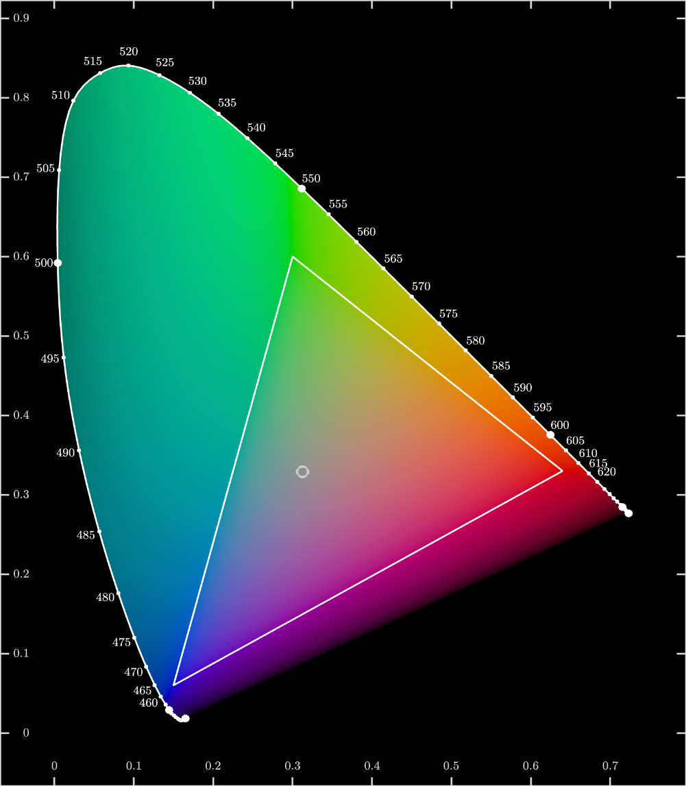
I’ll take a brief moment to talk about the different color spaces in use today. The standard one is of course sRGB, but many displays cover a wider range of colors than is allowed in sRGB. For example, most modern displays produced by Apple operate in the DCI-P3 color space which has more vivid greens and reds than sRGB and correspondingly has a larger gamut. When a computer encounters an image that has a larger gamut than the display, it must find a way to map a larger color space into a smaller one, which is the same problem that we will deal with. I do not know the details of how this is typically done, but I wanted to mention it as it is important.
A choice I have to make every time I render an image is to decide which color space or color profile to use. If I choose sRGB then the image will look the same on all displays, but because there are some displays that have a much larger gamut, my final image won’t reach its full potential on those displays. If I choose a wider gamut like P3, the final image will look great on wide gamut displays, but will be slightly more inaccurate on ordinary sRGB displays. This of course, depends on the aforementioned mapping algorithm.
My final decision was to have all the visible spectra up to section 7 drawn in sRGB for consistency. As for the periodic table of spectra, I used DCI-P3 simply because I wanted it to look as good as possible on my wide-gamut display. Just to make sure this was all right, I also viewed the final image on an sRGB display and found the colors didn’t noticeably shift, which justified my decision. Finally, the spectra in section 10 are rendered in P3 as well.
We are finally ready to tackle the problem of rendering the visible spectrum. For each wavelength of light, we can just use the color matching functions to get an XYZ coordinate and then convert it to sRGB.
The issue is of course that valid RGB coordinates must lie between \(0\) and \(1\) and the coordinates obtained from spectral colors will always fall outside this range, sometimes by a large margin. We must find a way to choose a point within the RGB gamut that most closely matches a pure spectral color. We must do so in a way that preserves the brightness and hue of each color and produces a smooth image. There is no one right way to do this but rather a variety of methods, some better than others.
The simplest approach is to mix the spectral color with a specified amount of gray background light. This way of doing it is physically real. What I mean is you can replicate this process by shining a rainbow of light onto a gray surface, and so this mathematical transformation corresponds to a thing you can do in real life. We write this process as
where \(\alpha \) and \(\beta \) specify the amounts of spectral light and gray respectively. Let’s see what happens when we try to generate an image this way. We’ll choose values of \(\alpha \) and \(\beta \) so that the combined color always falls into the RGB gamut. The result:
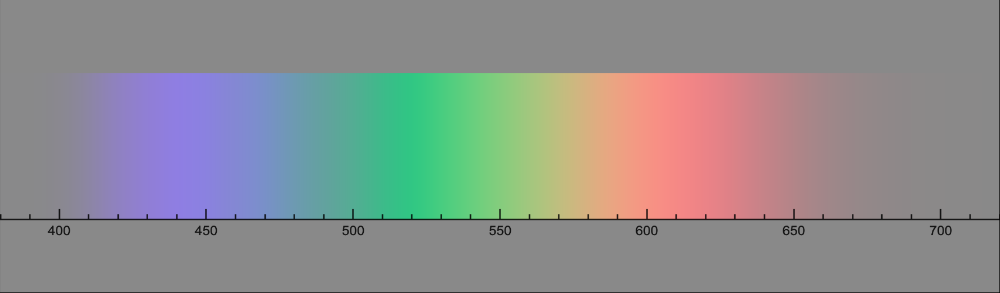
This is all right. The main issue is that the colors look quite pale and desaturated. Can we do better? Here is a list of other ways I came up with to make sure the colors remain in the gamut.
Make \(\beta \) a function of \(\lambda \). Adjust the amount of gray light for each wavelength until the combination is valid (“Auto set gray”):
Make \(\alpha \) depend on \(\lambda \) and adjust the amount of spectral light (“Auto set color”):
Interpolate between the spectral color and gray for each wavelength (“Auto mix”):
Interpolate between the spectral color and gray, but choose the gray to have the same luminance as the spectral color (“Auto mix equiluminant gray”).
Some of these techniques produce decent results. I prefer the “Auto mix” since it produces the most vibrant output image, and the image looks quite nice. There is, however, a striking flaw with all of these pictures. I saw it when I compared my result to a real spectrum that I created with my diffraction grating. Something was off. The reds, oranges, yellows and greens seemed mostly accurate. When I got to blue, the there was quite a noticeable difference. In my computer generated image, the part of the spectrum from \(420\) \(\mathrm {nm}\) to \(450\) \(\mathrm {nm}\) appears tinted violet. In real life, however, this region of the spectrum was really a deep blue. I wondered what had happened. It turns out I had failed to take into account the complexities of color perception. The CIE XYZ color space is only meant to be used for color reproduction, that is, how to represent colors as numbers and then using those numbers to recreate the very same color. In real life, when we combine a color with gray, its hue shifts a little bit, and this is something that CIE XYZ does not tell us about. So while my image was correct from a scientific perspective, it was not the most subjectively accurate representation of the visible spectrum. To fix this, I had to account for slight distortions in color perception that happen at the extreme edges of color space.
There is quite a large list of effects that distort the perception of color. I will discuss three of them. The first is the Bezold-Brücke shift. This describes the tendency of a color’s hue to depend on how bright it is. As luminance is increased, violets tend to appear more blue than they actually are. Greens will appear more yellow and reds will appear more orange.
Next, the perceived luminance of a color depends on its saturation. This is known as the Helmholtz-Kohlrausch effect. Two colors with the same \(Y\) value may seem to have different luminances. The more saturated color is the one with greater apparent luminance.
Finally, we come to the Abney effect, which states that the hue of a color shifts as saturation is increased. This means that when interpolating between a spectral color and gray light as we did before, the hue does not remain the same. It explains why when we mixed blue and gray light we got purple instead of pale blue.
The ideal way to solve these issues would be to use a color appearance model as our color space instead of CIE XYZ. The entire purpose of a color appearance model is to account for these perceptual effects and to give a mathematical description of color that most closely matches what we subjectively perceive. The downside is, of course, that it is much more complicated and difficult to work with compared to XYZ. The right approach would have been to select a color appearance model (CIECAM02 is the standard), convert all our colors to this coordinate system, do the mixing in this coordinate system and then convert back to RGB. That being said, I did not want to deal with all the extra complexity that would have come along with this. Instead, I opted for a much simpler approach.
I ignored the Bezold-Brücke shift and the Helmholtz-Kohlrausch effect because they were not as important or noticeable in practice. I manually corrected for the Abney effect by comparing the colors in the computer generated image to real monochromatic hues produced from the emission spectra of gas tubes and then shifting the colors in the image to cancel out the Abney effect. As I have normal color vision, I assume that my final result would be agreeable with the general population even though there are actually slight variations in color perception between individuals with normal vision.
To mitigate the Abney effect, I had to shift each wavelength by an amount that would counteract the existing distortion. To find out how much shift was required, I looked at the Abney effect plotted on the xy chromaticity diagram.

In this diagram, each curved line represents a set of colors that all appear to have the same hue. The direction of the curve determines if the hue shifts up or down as saturation is increased. An interesting thing to note is that some regions of the diagram contain overlapping curves that go in opposite directions. It seems like different sources give contradictory results. That’s not a big deal though since for now we just want to roughly estimate the size of the Abney effect. To do this we overlay the RGB triangle onto the diagram. Let’s pick a color, say \(460\) \(\mathrm {nm}\) blue. When we mix this with gray, the resulting color lands on a different line than the one that goes through \(460\) \(\mathrm {nm}\). If we follow this new line all the way out to the spectral locus, we see its endpoint sits at a shorter wavelength, hence mixing with gray gives a more violet looking hue. We want to find the right wavelength such that when we mix it with gray, the resulting hue is the same as that of pure \(460\) \(\mathrm {nm}\) light. To do this, we trace the equal hue curve until it falls into the RGB triangle and call this the interior point. Then we take the straight line between the gray point and the interior point and extend it until it touches the spectral locus at a new wavelength, and in this case it lands at \(470\) \(\mathrm {nm}\). Then, if we mix this new wavelength with gray, the result will have the same hue as \(460\) \(\mathrm {nm}\) light. We’ll call this the effective wavelength of light.
I proceeded to estimate the effective wavelength across the entire visible spectrum. Then if we replace each wavelength with its effective wavelength and calculate the color, the result would seem much closer to reality. The first result after the correction seemed quite good, the blues became much more bluer. After this success, I conducted a much more stringent test. Since I have a few gas discharge tubes, I rendered a bunch of emission spectra of gasses and compared them to the pure spectral lines I saw through a diffraction grating.

Since the lines from the tubes took on discrete wavelengths, their colors were much easier to compare against my computer generated images. I found that the entire spectrum needed a bit more correction, which I performed. Afterwards, I felt I had reached a point where I was mostly satisfied with my work. Here is the final result:
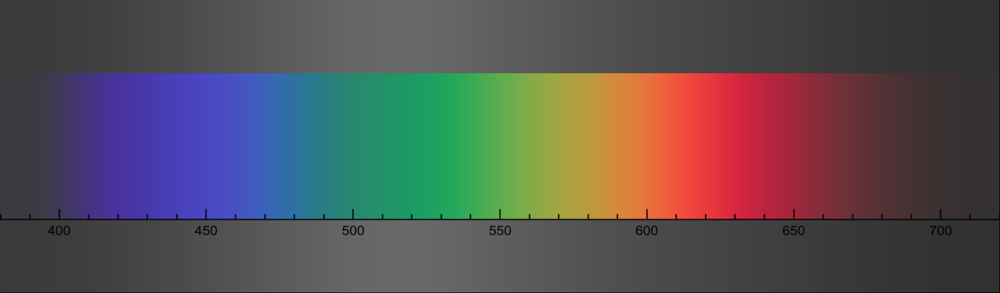
This image is the closest approximation I could make of the spectrum. It’s not perfect8, but it does a decent job, in my opinion, of representing what the real thing looks like. I had achieved my goal of rendering the spectrum of visible light and I learned a lot along the way. Here is another version with discrete lines spaced \(5\) \(\mathrm {nm}\) apart:
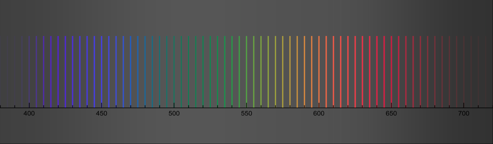
The code I wrote can be found at brandonli.net/spectrumrenderer. It comes as an installable file and it is open source.
You might wonder why we should go through all the trouble of making an extremely accurate picture when there are already a bunch of others that seem good enough. You might bring up the fact that we very often make use of “inaccurate” or oversimplified depictions of phenomena in science communication and education. And often, teaching a simplified version of a concept is the best way to introduce it to a student, in and this case you have to make sure the student is aware that what they’re learning is a simplified version of the real thing that is stripped of all the complexities and nuance. This is okay because here accuracy is being scarified for ease of learning, but what about when making something as accurate as possible has no downsides? Such is the case with pictures of the visible spectrum. Here there is an issue with choosing a random picture to represent it. It may give the students the wrong idea of what the spectrum “should” look like.
Going back to the very first image from the introduction, a student who sees this as their first exposure to the subject might get the false impression that the spectrum can be divided into bands of distinct colors, which is as far from the truth as it gets. They might think that the spectrum runs from \(380\) to \(740\) \(\mathrm {nm}\) and gets cut off beyond that point. Our picture, however, shows that the the brightness of light falls off gradually at the boundaries meaning there is no hard boundary to the visible spectrum. These distinctions may not always be stated outright, but they are implicit statements that the picture is making and they have an impact on the viewer, whether the viewer is aware of it or not. When someone is writing that article, they might not have the time or patience to go through all the different variants of an image and assess which one is the best. In my opinion though, this is something we as a whole should focus on more and something we should attach greater value to.
One of the most useful and interesting outcomes of this project is that the code I wrote can be used to render arbitrary spectral distributions, which means, for example, that we can take data from a spectrometer and display it as accurately as possible. I decided to use my tool to create a periodic table with the atomic emission spectrum of each element rendered as a high resolution image. This kind of thing already exists and looking up “periodic table of spectra” gives many such examples. That said, these mostly exhibit the same issues that we’ve discussed above meaning they’re not ideal reference images for students or scientists 9. I thus decided to make my own version to test out my new spectrum rendering technique.
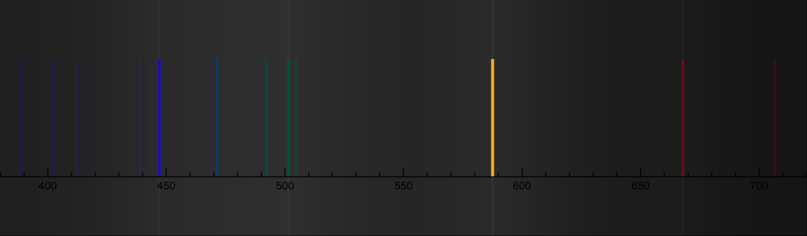
All of the data I used comes from NIST’s atomic spectra database 10. For each element and each ionization state, NIST provides a list containing the wavelengths and intensities of all the spectral lines. For example, the process of \(e^- + \text {He}^+ \to \text {He}\) generates the spectrum of He I (neutral helium), whose data looks something like:
| Ion | Observed Wavelength Air (nm) | Rel Int. |
| He I | \(471.31457\) | \(30\) |
| He I | \(492.19313\) | \(20\) |
| He I | \(501.56783\) | \(100\) |
Given this data we can easily make a spectral power distribution for He I by adding together a bunch of peaks at the observed wavelengths scaled by their relative intensity.
There is a small difficulty that arises from most elements having multiple ionization states. Each ion has its own distinct spectrum (eg. Xe I vs. Xe II) and each ion is present in different amounts inside a discharge lamp, for example. There is no right way to determine how much each ion contributes unless we perform an experiment. I still had to find a way to take all the ions into account, so I just went with a very simple approach. I assume that the gas is at a very high temperature and in thermal equilibrium, and hence the number of ions \(N\) is proportional to the Boltzmann factor:
where \(E_{\text {ionization}}\) is the energy it takes to ionize a neutral atom \(X\) to \(X^{+k}\) in the process \(X\to k e^{-} + X^{+k}\) and \(T\), the temperature, is somewhat arbitrarily chosen. In the end, I generated periodic tables for mixtures of all ions as well as individual ionization states from I to V. Some elements don’t have recorded spectral lines, and are left blank. The images can be accessed here:
| All ions | https://brandonli.net/spectra/all_ions |
| Ionization I (Neutral) | https://brandonli.net/spectra/ionization_i |
| Ionization II (+1 charge) | https://brandonli.net/spectra/ionization_ii |
| Ionization III (+2 charge) | https://brandonli.net/spectra/ionization_iii |
| Ionization IV (+3 charge) | https://brandonli.net/spectra/ionization_iv |
| Ionization V (+4 charge) | https://brandonli.net/spectra/ionization_v |
Finally, I took spectrum measurements of all of my gas tubes and rendered them as images. I had samples of all the non-radioactive noble gasses, mercury vapor, diatomic hydrogen, nitrogen, oxygen, and chlorine, and a couple of compounds and air. The noble gasses and mercury all closely resembled their reference spectra. Hydrogen was similar, but had a couple of other bands. The rest of the pure elements (nitrogen, oxygen, and chlorine) look very different from their atomic spectra. Nitrogen’s spectrum only contains molecular bands, which looks quite beautiful. Oxygen’s has a few prominent molecular bands as well as a few faint lines from atomic oxygen. What’s unusual is that hydrogen, oxygen, chlorine, \(\text {CO}_2\) and \(\text {H}_2 \text {O}\) all seem to share the same bands at \(450, 482, 519, 560,\) and \(609\) \(\mathrm {nm}\). My best explanation is that all of these tubes are contaminated with molecular oxygen. In the case of chlorine, its tube was barely working when I measured its spectrum and the tube died shortly after I completed the measurement. The result was a particularly noisy and poor quality spectrum. Finally, the spectrum of air strongly resembles nitrogen, which is expected since air is mostly made of nitrogen.
| Measured spectra | https://brandonli.net/spectra/measured |
The following is a collection of spectra that include the results of section 7 in a wide gamut color space as well as renders of spectrometer data collected from a bunch of light sources.
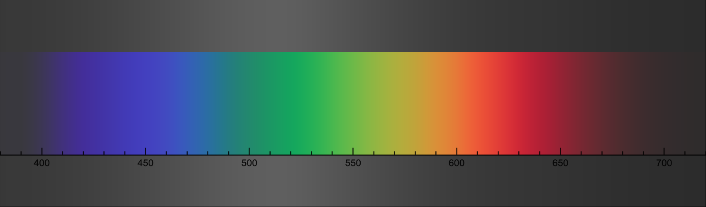
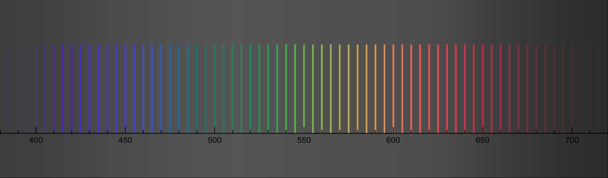

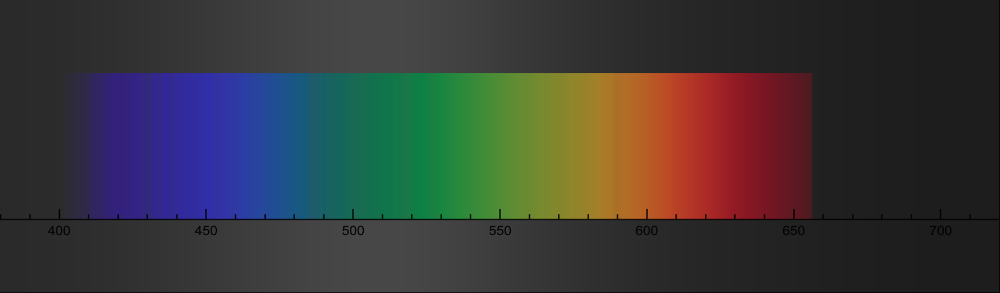
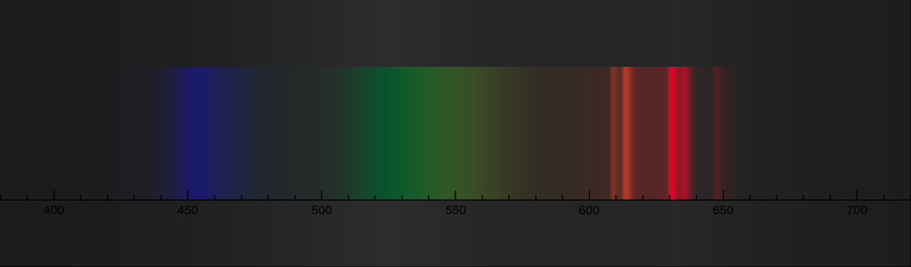
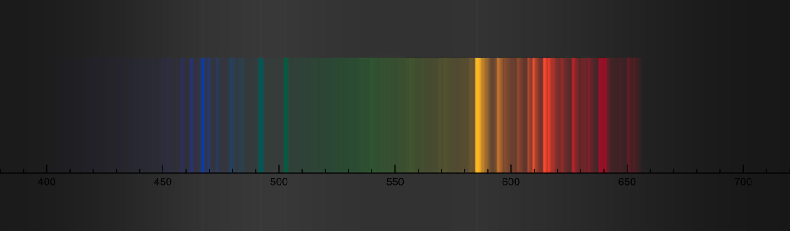